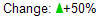
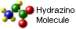

ChartDirector 7.1 (C++ Edition)
ChartDirector Mark Up Language
Font Styles
<*font=Times New Roman Italic,size=16,color=FF0000*>Hello <*font=Arial,size=12,color=008000*>world! | Attribute | Description |
|---|---|
| font | Starts a new style section, and sets the font name. You may use this attribute without a value (that is, use "font" instead of "font=arial.ttf") to create a new style section without modifying the font name. To terminate a style section, use "/font". This restores the style to the state before the style section. |
| size | The font size. |
| width | The font width. This attribute is used to set the font width and height to different values. If the width and height are the same, use the size attribute. |
| height | The font height. This attribute is used to set the font width and height to different values. If the width and height are the same, use the size attribute. |
| color | The text color in hex format. |
| bgColor | The background color of the text in hex format. |
| underline | The line width of the line used to underline the following characters. Set to 0 to disable underline. |
| sub | Set the following text to be in subscript style. This attribute does not need to have a value. (You may use "sub" as the attribute instead of "sub=1".) |
| super | Set the following text to be in superscript style. Set the following text to be in superscript style. This attribute does not need to have a value. (You may use "super" as the attribute instead of "super=1".) |
| xoffset | Draw the following the text by shifting the text horizontally from the original position by the specified offset in pixels. |
| yoffset | Draw the following the text by shifting the text vertically from the original position by the specified offset in pixels. |
| advance | Move the cursor forward (to the right) by the number of pixels as specified by the value this attribute. |
| advanceTo | Move the cursor forward (to the right) to the position as specified by the value this attribute. The position is specified as the number of pixels to the right of the left border of the block. If the cursor has already passed through the specified position, the cursor is not moved. |
Blocks and Lines
<*size=15*><*block*><*color=FF*>BLOCK<*br*>ONE<*/*> and <*block*><*color=FF00*>BLOCK<*br*>TWO<*/*> Embedding Images and Symbols
<*img=my_image_file.png*> my_image_file.png is the path name of the image file.<*size=20*>A <*img=sun.png*> day <*size=10*>Change: <*img=@Triangle,color=00CC00,width=7,height=10*>+50% 
<*img=@PolyShape(0,500,500,500,NewShape,0,500,300,300),width=13,color=FF0000*> | Attribute | Description |
|---|---|
| img | The image specification, which can be the path name for an image file, or a '@' character followed by the shape id for a built-in symbol. |
| width | The width of the image or symbol in pixels. |
| height | The height of the image or symbol in pixels. |
| size | A shortcut to set both the width and height of the image or symbol to the same value in pixels. |
| color | The color of the symbol. |
| edgeColor | The edgeColor of the symbol. |
Blocks Attributes
<*block,valign=absmiddle*><*img=molecule.png*> <*block*>Hydrazino\nMolecule<*/*><*/*> 
| Attribute | Description |
|---|---|
| width | The width of the block in pixels. By default, the width is automatically determined to be the width necessary for the contents of the block. If the width attribute is specified, it will be used as the width of the block. If the width is insufficient for the contents, the contents will be wrapped into multiple lines. |
| height | The height of the block in pixels. By default, the height is automatically determined to be the height necessary for the contents of the block. If the height attribute is specified, it will be used as the height of the block. |
| maxwidth | The maximum width of the block in pixels. If the content is wider than maximum width, it will be wrapped into multiple lines. |
| truncate | The maximum number of lines of the block. If the content requires more than the maximum number of lines, it will be truncated. In particular, if truncate is 1, the content will be truncated if it exceeds the maximum width (as specified by maxwidth or width) without wrapping. The last few characters at the truncation point will be replaced with "...". |
| linespacing | The spacing between lines as a ratio to the default line spacing. For example, a line spacing of 2 means the line spacing is two times the default line spacing. The default line spacing is the line spacing as specified in the font used. |
| bgColor | The background color of the block in hex format. |
| edgeColor | The edge color of the block in hex format. |
| roundedCorners | The radius of the rounded corners of the block in pixels. If one value is provided, it will be used as the radius for all 4 corners. If 4 values separated by spaces are provided, they will be the radii of the top-left, top-right, bottom-right and bottom-left corners of the block. |
| raisedEffect | The raised effect of the block. Please refer to Box.setBackground on how this parameter is used. |
| margin | The margins between the content of the block to the edges of the block. If the margin is a single number, it will be applied to the left, right, top and bottom margins. If the margin is two to four numbers separated by spaces, they will be applied to the left, right, top and bottom margins, with the default value of 0. For example, "margin=3 5" will set the left and right margins to 3 and 5 pixels, and the top and bottom margins to 0. |
| valign | The vertical alignment of sub-blocks. This is for blocks that contain sub-blocks. Supported values are baseline, top, bottom, middle and absmiddle. The value baseline means the baseline of sub-blocks should align with the baseline of the block. The baseline is the underline position of text. This is normal method of aligning text, and is the default in CDML. For images or blocks that are rotated, the baseline is the same as the bottom. The value top means the top line of sub-blocks should align with the top line of the block. The value bottom means the bottom line of sub-blocks should align with the bottom line of the block. The value middle means the middle line of sub-blocks should align with the the middle line of the block. The middle line is the middle position between the top line and the baseline. The value absmiddle means the absolute middle line of sub-blocks should align with the absolute middle line of the block. The absolute middle line is the middle position between the top line and the bottom line. |
| halign | The horizontal alignment of lines. This is for blocks that contain multiple lines. Supported values are left, center and right. The value left means the left border of each line should align with the left border of the block. This is the default. The value center means the horizontal center of each line should align with the horizontal center of the block. The value right means the right border of each line should align with the right border of the block. |
| angle | Rotate the content of the block by an angle. The angle is specified in degrees in counter-clockwise direction. |